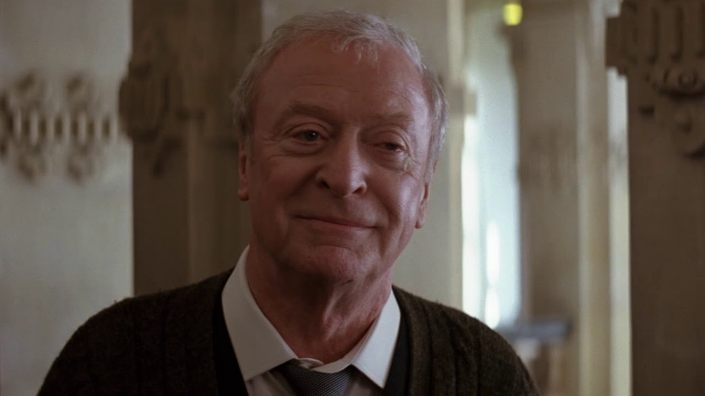
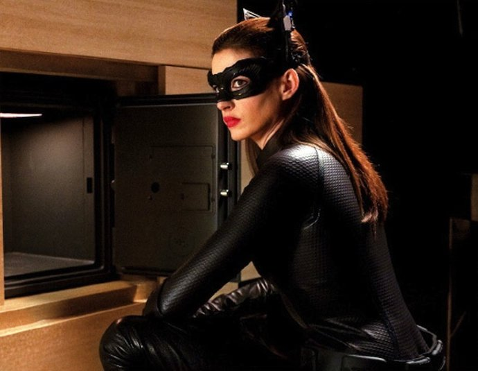

La trilogía de Christopher Nolan presenta a Batman como un personaje complejo que evoluciona no solo en sus habilidades físicas y estratégicas, sino también en su dimensión psicológica y moral. A lo largo de las tres películas, se muestra cómo Bruce Wayne transita un camino marcado por el miedo, la responsabilidad y el sacrificio, elementos que lo van transformando hasta convertirlo en un verdadero símbolo para Gotham. Esta evolución no es lineal, sino que está atravesada por conflictos internos, pruebas externas y decisiones que lo redefinen constantemente.
En Batman Begins (2005), Bruce parte de un lugar de dolor y vacío tras la muerte de sus padres. Es en esta pelicula donde se ve su proceso de formación, desde su entrenamiento con la Liga de las Sombras hasta la construcción de su identidad como Batman. Lo importante en esta etapa es que descubre que su mayor arma no son solo las habilidades físicas o la tecnología, sino la capacidad de inspirar miedo en los criminales. Así, Batman nace como una figura que trasciende al hombre para convertirse en un mito, un símbolo intangible.
The Dark Knight (2008), se observa la consolidación de Batman como héroe y al mismo tiempo su vulnerabilidad frente al caos. La aparición del Joker funciona como un espejo oscuro que pone a prueba los límites morales de Bruce Wayne. Este villano le plantea un dilema fundamental, hasta dónde puede llegar Batman para mantener el orden sin convertirse en aquello que combate. La película explora el choque entre el orden y el descontrol absoluto, mostrando cómo la misión de Batman se vuelve más difícil al tener que proteger no solo la seguridad física de Gotham, sino también la integridad moral de sus ciudadanos.
El sacrificio personal se hace aún más evidente en esta segunda parte. Bruce comienza a perder su vida privada, su estabilidad emocional y la posibilidad de una existencia normal. En contraste, Harvey Dent aparece como el "caballero blanco" que representa la esperanza institucional que Batman nunca podrá ser. La caída de Dent, sin embargo, obliga a Bruce a cargar con una mentira para preservar la imagen de un héroe incorruptible frente a la sociedad. Este acto marca un punto crucial en la evolución del personaje, pasa de ser un vigilante a un mártir, dispuesto a ser odiado con tal de mantener viva la esperanza.
The Dark Knight Rises (2012), la narrativa se centra en la caída y renacimiento de Bruce Wayne. Después de años de retiro y marcado por las heridas físicas y emocionales, regresa ante la amenaza de Bane. Aquí se refleja la etapa más humana y frágil del personaje, un hombre debilitado que debe reconstruirse desde cero para volver a ser Batman. El viaje físico de escapar de la prisión simboliza también su liberación interna, un renacer que le permite superar el dolor del pasado y dar un paso más allá de su misión original.
la evolución culmina en el sacrificio absoluto. Batman deja de ser solo un individuo para convertirse en una verdadera leyenda. Bruce comprende que la figura de Batman debe trascenderlo, y que Gotham necesita más la idea del héroe que al hombre detrás de la máscara. Al simular su muerte y retirarse, logra cerrar su ciclo personal mientras asegura que el símbolo de Batman perdure. La trilogía no solo narra la historia de un superhéroe, sino la de un hombre que, a través del miedo, la lucha y el sacrificio, logra convertirse en un mito eterno.


Batman
Alfred

Comisario Gordon

Ra's al Ghul
Bruce Wayne se convierte en Batman y enfrenta a Ra’s al Ghul y el Espantapájaros para salvar Gotham.


Batman

Joker

Harvey Dent
Batman enfrenta al Joker, quien desata el caos en Gotham y provoca la caída de Harvey Dent en Dos Caras.


Batman

Bane
Gatubela
Ocho años después, Batman regresa para enfrentar a Bane, un enemigo que amenaza con destruir Gotham.


Batman / Bruce Wayne
Millonario y vigilante de Gotham, símbolo de disciplina y justicia frente al crimen.
El Joker
Agente del caos que enfrenta a Batman, obligándolo a desafiar sus propios límites morales.

Alfred Pennyworth
Leal mayordomo y figura paterna de Bruce, aporta la guía moral y el apoyo emocional.
Jim Gordon
Aliado fiel de Batman, símbolo de justicia y moral dentro de la policía de Gotham..
Christopher Nolan es un director, guionista y productor británico-estadounidense nacido en 1970 en Londres, reconocido por su estilo visual único y su narrativa compleja. Desde sus primeros trabajos independientes, Nolan se destacó por combinar elementos de suspenso, ciencia ficción y drama psicológico, construyendo historias que desafían la percepción del tiempo y la realidad. Su fama mundial llegó con la trilogía de Batman, compuesta por Batman Begins (2005), The Dark Knight (2008) y The Dark Knight Rises (2012), películas que redefinieron el género de superhéroes con un tono oscuro y realista, así como actuaciones memorables y una dirección impecable. Otro de sus grandes logros es Interestelar (2014), una epopeya de ciencia ficción que explora el amor, el sacrificio y la relatividad del tiempo a través de una narrativa visualmente impactante y científicamente fundamentada. Más recientemente, Nolan sorprendió al público con Oppenheimer (2023), una obra que combina rigor histórico con tensión dramática, centrada en la vida del físico responsable del desarrollo de la bomba atómica. A lo largo de su carrera, Nolan se ha consolidado como uno de los cineastas más influyentes de su generación, destacando por su capacidad de fusionar entretenimiento masivo con profundidad intelectual y estética cinematográfica innovadora.


Batman en la trilogía de Nolan es el más duro y frío que yo vi. Nunca pierde su esencia en ninguna de las tres películas. Es mi superheroe favorito
Dante Rattalino

Nolan hizo un excelente trabajo para los espectadores casuales y los fanaticos usando de referencia los mejores comics como la broma asesina.
Agustin Rodriguez

Me encanta cómo cada película tiene su propia identidad pero sigue conectada a la trilogía. Es mi trilogia favorita junto con la saga de star wars.
Ezequiel Cerutti
La trilogía de Batman dirigida por Christopher Nolan es ampliamente reconocida no solo por su acción y efectos visuales, sino también por la profundidad con la que se exploran los personajes y sus motivaciones. En general, los fans y críticos coinciden en que estas películas redefinieron la imagen de Batman, alejándose del estilo más caricaturesco de adaptaciones anteriores y mostrando un héroe más humano, vulnerable y moralmente complejo. La evolución de Bruce Wayne desde un joven atormentado por la pérdida de sus padres hasta convertirse en un protector decidido de Gotham resuena con muchos espectadores, al igual que la construcción de los villanos, que poseen motivaciones claras y personalidades memorables, como el Joker o Bane. Además, la trilogía destaca por su realismo y coherencia narrativa, combinando escenas de acción impresionantes con dilemas éticos y emocionales. La interacción entre Batman y sus aliados, como Alfred y el comisario Gordon, también aporta una dimensión emocional que fortalece la historia. En conjunto, estas películas no solo ofrecen entretenimiento, sino que también invitan a reflexionar sobre la justicia, la venganza y el sacrificio, consolidándose como un referente en la historia del cine de superhéroes.


Christopher Nolan fue elegido presidente del Directors Guild of America, consolidándose como una figura influyente en la industria tras el éxito de "Oppenheimer".

Matt Reeves indicó que "The Batman 2" podría ser la última película de Robert Pattinson como Batman, aunque sus historias seguirán siendo independientes dentro del Universo DC.